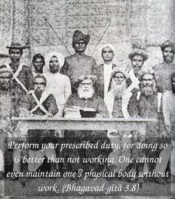

Perform your prescribed duty, for doing so is better than not working. One cannot even maintain one’s physical body without work.


There are many pseudo meditators who misrepresent themselves as belonging to high parentage, and great professional men who falsely pose that they have sacrificed everything for the sake of advancement in spiritual life. Lord Kṛṣṇa did not want Arjuna to become a pretender. Rather, the Lord desired that Arjuna perform his prescribed duties as set forth for kṣatriyas. Arjuna was a householder and a military general, and therefore it was better for him to remain as such and perform his religious duties as prescribed for the householder kṣatriya. Such activities gradually cleanse the heart of a mundane man and free him from material contamination. So-called renunciation for the purpose of maintenance is never approved by the Lord, nor by any religious scripture. After all, one has to maintain one’s body and soul together by some work. Work should not be given up capriciously, without purification of materialistic propensities. Anyone who is in the material world is certainly possessed of the impure propensity for lording it over material nature, or, in other words, for sense gratification. Such polluted propensities have to be cleared. Without doing so, through prescribed duties, one should never attempt to become a so-called transcendentalist, renouncing work and living at the cost of others.